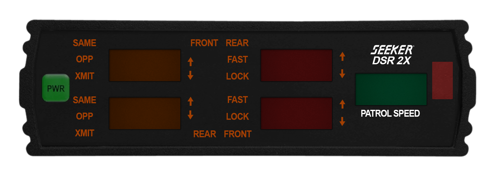
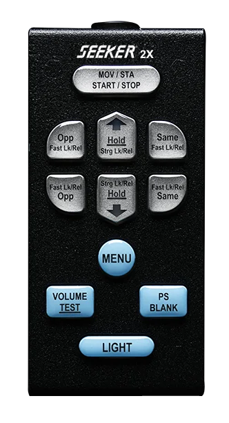

Drag to move, scroll to scale. ESC exits move mode.
--------
LOCKED
--------
LOCKED

Drag to move, scroll to scale. Double-click to finish.
MOV/STA
OPP
HOLD
SAME
OPP
HOLD
SAME
MENU
VOL
BLANK
Copy CSS
WINDOW CALIBRATION
Click a window to select it.
drag
move
←↑→↓
nudge (
shift
×10)
scroll
glyph size
shift
+scroll width
ctrl
+scroll height
alt
+scroll tracking
A
apply selected size to all windows
R
reset selected
esc
exit
none selected
Show CSS